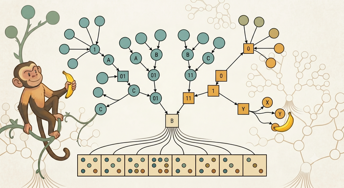

CSS 343
</>
Data Structures, Algorithms & Discrete Mathematics II
Autumn 2026 · MW 1:15–3:15 PM · UW2-305 · Dr. Marcel Gavriliu
Weeks
click a week to open it; the current week is open
All demos
every interactive demo in the course library